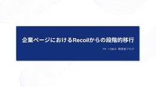

PR TIMES 開発者ブログ
https://developers.prtimes.jp
PR TIMESを日々開発するエンジニア、デザイナー、プロダクトマネージャーによる開発者ブログです。「行動者発の情報が、人の心を揺さぶる時代へ」をプロダクトで挑戦するチームの開発の裏話や技術共有メモ、ちょっと聞いて欲しいあれこれを発信します。
フィード

企業ページにおけるRecoilからの段階的移行
PR TIMES 開発者ブログ
こんにちは、フロントエンドエンジニアのやなぎ（ @apple_yagi ）です。 PR TIMESのフロントエンドでは、これまで状態管理にRecoilを利用してきました。しかし、Recoilは現在アー […]
2日前

自動選択リストをリニューアルしてみえた、開発の難しさと楽しさ
PR TIMES 開発者ブログ
こんにちは、PR TIMESでインターンをしている勝間田（@Sho_26_ts）です。 今回は、「メディアリレーション」プロジェクトの一員として担当した「自動選択リスト」機能のリニューアルについてご紹介します。2025年 […]
12日前
PHP Conference Japan 2025 に協賛・登壇しました！ #phpcon
PR TIMES 開発者ブログ
こんにちは！PR TIMES ソフトウェアエンジニアの河瀨翔吾（@shogogg）です。現在はバックエンド開発を主に担当しています。好きなゲームはマリオカートです。 今回は6月28日（土）に開催された PHP Confe […]
18日前
1年間EMとして取り組んだことと悩みや葛藤
PR TIMES 開発者ブログ
こんにちは、フロントエンドエンジニアの小張（@kobari41257）です。 今年の4月までの1年間、社内昇格としては初のEM（エンジニアリングマネージャー）職として、開発部のマネジメントに取り組んだことについてご紹介し […]
25日前
Amazon FSx for NetApp ONTAPで手動バックアップおよびリストアを行うTips
PR TIMES 開発者ブログ
こんにちは。バックエンドエンジニアの筒井(@tsuttsun_wind)です。 PR TIMESではファイルストレージとしてAmazon FSx for NetApp ONTAP（以降、FSx）を利用しています。 通常は […]
1ヶ月前
PR TIMES はPHP Conference Japan 2025に協賛・登壇します
PR TIMES 開発者ブログ
こんにちは。バックエンドエンジニアの中山です。 PR TIMESは、PHP Conference Japan 2025 にブロンズプランとして協賛します。 PHP Conference とは PHP Conference […]
1ヶ月前
happy-css-modulesからcss-modules-kitに移行しました
PR TIMES 開発者ブログ
こんにちは、フロントエンドエンジニアのやなぎ（@apple_yagi）です。 先月公開したエントリーでもご紹介した通り、PR TIMESのフロントエンドは現在CSS Modulesを使用してスタイリングを行っています。 […]
1ヶ月前
PR TIMESにおけるメールをSendGridで送信するように実装しました
PR TIMES 開発者ブログ
こんにちは、PR TIMESのバックエンドエンジニアのSongです。今回はPR TIMESにおけるメールの一部をSendGridで送信するようにしたことについて紹介します。 背景 PR TIMESにおけるメールはPrTi […]
1ヶ月前
PHPカンファレンス新潟2025に協賛・登壇しました！ #phpcon_niigata
PR TIMES 開発者ブログ
こんにちは！PR TIMES ソフトウェアエンジニアの河瀨翔吾（@shogogg）です。現在はバックエンド開発を主に担当しています。好きな PHP の予約語は readonly です。 今回は5月31日に開催されたPHP […]
2ヶ月前
【Tips】PostgreSQLで安全にNOT NULL制約を追加する
PR TIMES 開発者ブログ
こんにちは、バックエンドエンジニアの永井です。今回は本番運用されているPostgreSQLのテーブルのカラムに対して、安全にNOT NULL制約を追加する流れを書いていきます。 背景 以前、バックエンドの実装していたとき […]
2ヶ月前